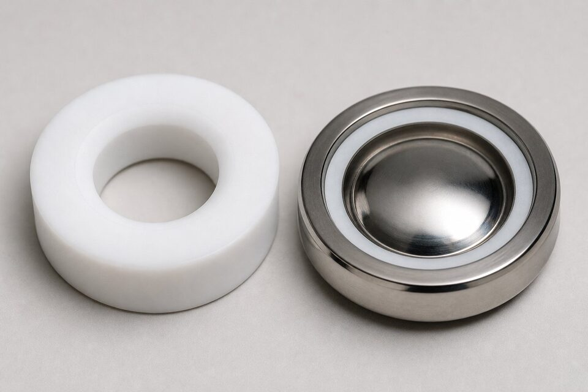

نقش نشیمنگاه در شیر
در هر شیری که آببندی میکند، یک سطح تماس اصلی وجود دارد: جایی که دیسک یا توپ روی نشیمنگاه مینشیند. این سطح کوچک، مسئول کلاس نشتی، پایداری آببندی در سیکلهای حرارتی و مقاومت در برابر سایش سیال است. به همین دلیل دو شیر با بدنه یکسان اما نشیمنگاه متفاوت، رفتار و عمر کاملاً متفاوتی دارند. شناخت مواد رایج نشیمنگاه و محدودیتهای هر یک، کلید انتخاب درست و جلوگیری از نشتی زودرس است.

نشیمنگاههای نرم
- (PTFE): پادشاه سازگاری شیمیایی و رایجترین انتخاب؛ محدودیت دما حدود دویست و سی درجه.
- (RPTFE) و کامپوزیتها: مقاومت سایشی و خزشی بهتر با حفظ بیشتر خواص.
- نایلون: برای سرویسهای عمومی با فشار بالا و دمای متوسط.
- (PEEK): تحمل دمای بالاتر و استحکام مکانیکی عالی؛ انتخاب سرویسهای سختتر.
- الاستومرها: آببندی عالی در دمای پایین برای شیرهای خاص مانند پروانهای و دیافراگم.
نشیمنگاههای فلزی
در دماهای بالا یا سیالهای ساینده، مواد نرم دوام نمیآورند و نوبت به نشیمنگاه فلزی میرسد: استیلها با پرداخت دقیق، پوششهای سخت و آلیاژهای پایه کبالت یا نیکل. نشیمنگاه فلزی با نیروی نشستن بالا و پرداخت سنگزنی، تا کلاسهای نشتی چهار و پنج میرسد اما کلاس شش نرم را ندارد. در طرحهای فایرسیف نیز نشیمنگاه فلزی نقش پشتیبان را پس از آسیب دیدن نشیمنگاه نرم ایفا میکند. انتخاب فلز مناسب باید با متریال دیسک هماهنگ باشد تا از گیرکردن یا سایش چسبنده جلوگیری شود.
مقایسه مواد رایج
| ماده | تحمل نسبی دما | نقطه قوت | محدودیت اصلی |
|---|---|---|---|
| (PTFE) | متوسط | سازگاری شیمیایی عالی | خزش در فشار/دمای بالا |
| (RPTFE) | متوسط | مقاومت سایشی بهتر | کمی گرانتر |
| نایلون | متوسط | استحکام در فشار بالا | حساس به برخی سیالها |
| (PEEK) | بالاتر | دما و استحکام بالا | هزینه |
| فلزی/پوشش سخت | بالاترین | دما و سایش | کلاس نشتی پایینتر |
مقایسه نسبی؛ محدوده دقیق هر گرید باید از سازنده گرفته شود.
راهنمای انتخاب
برای انتخاب نشیمنگاه، سه پرسش بپرسید: دمای کاری سیال چقدر است؟ سیال خورنده یا ساینده است؟ و چه کلاس نشتیای لازم است؟ در دمای پایین و سیالهای عمومی، (PTFE) یا (RPTFE) انتخاب اقتصادی است. در دماهای بالاتر یا فشار بالا با سیکل زیاد، (PEEK) بررسی شود. در دمای خیلی بالا یا سیال ساینده، نشیمنگاه فلزی با پوشش سخت لازم است. اگر کلاس نشتی شش در دمای پایین لازم است، مواد نرم انتخاب شوند و اگر همان کلاس در دمای بالا خواسته شود، باید در امکانسنجی با سازنده بازنگری شود.
عمر نشیمنگاه و علائم فرسودگی
نشیمنگاههای نرم، قطعات مصرفی شیر محسوب میشوند و مدیریت عمر آنها بخشی از برنامه نگهداری است. عمر یک نشیمن به چهار عامل اصلی بستگی دارد: جنس و کیفیت ماده، دمای کاری سیال، تعداد سیکلهای قطع و وصل و وجود ذرات جامد در سیال. در عمل، این عوامل ترکیبی عمل میکنند؛ برای مثال همان نشیمنی که در آب تمیز سالها کار میکند، در سیال حاوی ذرات ساینده ممکن است ظرف چند ماه فرسوده شود. علائم فرسودگی تدریجی نشیمن شامل افزایش نشتی در وضعیت بسته، نیاز به گشتاور بیشتر برای آببندی نهایی و در موارد شدید، گیر کردن یا صدای غیرعادی هنگام عملکرد است. پایش این علائم در بازرسیهای دورهای و ثبت روند آنها، امکان برنامهریزی تعویض پیشگیرانه را فراهم میکند. در تعمیرات، چند نکته اهمیت دارد: تعویض همزمان نشیمنهای فرسوده حتی اگر فقط یکی نشتی دارد در شیرهای چندپورت، تمیزی کامل محل نصب قبل از نصب نشیمن جدید و عدم استفاده از ابزار تیز که به سطح آببندی آسیب بزند. پس از تعویض نیز تست نشتی نشیمن قبل از بازگشت به سرویس الزامی است. در سفارش قطعات یدکی، ذکر دقیق جنس، ابعاد و در صورت امکان شماره فنی سازنده اصلی، از دریافت نشیمنهای غیرمنطبق جلوگیری میکند؛ ابعاد مشابه ظاهری، تضمینکننده عملکرد یکسان نیست.
در انبارداری نشیمنهای پلیمری، دوری از نور مستقیم خورشید و منابع حرارتی را رعایت کنید؛ برخی پلیمرها در نگهداری طولانی نامناسب، خواص خود را پیش از نصب از دست میدهند و این فرسودگی پنهان فقط پس از نصب آشکار میشود.
جمعبندی
متریال نشیمنگاه یکی از سرنوشتسازترین انتخابهای یک شیر است: کلاس نشتی، محدوده دما و عمر آببندی به آن بستگی دارد. با تطبیق متریال با دما، سیال و کلاس نشتی مورد انتظار، از نشتی زودرس و توقفهای ناخواسته جلوگیری میشود و خرید شیر به تصمیمی دقیق و قابل دفاع تبدیل میگردد.
سوالات رایج
چرا متریال نشیمنگاه اینقدر مهم است؟
آببندی شیر در سطح تماس دیسک و نشیمنگاه اتفاق میافتد؛ متریال این سطح، کلاس نشتی، محدوده دما، مقاومت سایشی و عمر شیر را تعیین میکند. انتخاب اشتباه، حتی با بهترین بدنه، به نشتی زودرس منجر میشود.
محدودیت دمایی (PTFE) چقدر است؟
(PTFE) معمولاً تا حدود دویست و سی درجه سانتیگراد استفاده میشود؛ فراتر از آن خواص مکانیکی خود را از دست میدهد و باید به گزینههایی مانند (PEEK) یا نشیمنگاه فلزی رفت.
نشیمنگاه فلزی چه زمانی لازم است؟
در دماهای بالا، سیالهای ساینده یا نقاطی که کلاس نشتی بالا در دمای بالا لازم است؛ نشیمنگاه فلزی نشتی بیشتری نسبت به نرم دارد اما در شرایط سخت تنها گزینه است.
آیا متریال نشیمنگاه کلاس نشتی را تغییر میدهد؟
بله؛ نشیمنگاههای نرم معمولاً به کلاس شش میرسند در حالی که فلزیها بسته به پرداخت و نیروی نشستن، تا کلاس چهار یا پنج ارائه میشوند.
مطالب مرتبط
- متریال نشیمنگاه شیرآلات
- مقایسه کلاس نشتی (Class I تا VI)
- راهنمای تست و معیارهای نشتی شیرآلات
- راهنمای جامع شیر توپی (بال ولو)
با ذکر سیال، دما و کلاس نشتی موردنیاز، شیر با متریال نشیمنگاه متناسب به همراه مدارک عرضه میشود.
مشاهده صفحه محصول ← ثبت RFQ همین محصولتامین این تجهیزات را به پیشرو تجهیز فرتاک بسپارید
شرکت پیشرو تجهیز فرتاک تامینکننده تخصصی تجهیزات صنعتی برای پروژههای نفت، گاز، پتروشیمی، فولاد و نیروگاهی است. برای دریافت پیشنهاد فنی و قیمت، استعلام (RFQ) خود را ثبت کنید تا کارشناسان مهندسی فروش در کوتاهترین زمان پاسخ دهند.
- تامین شیرآلات صنعتیخانواده کامل شیر با گواهی مواد و تست
- تامین تجهیزات صنایع نفت و گازپکیج مواد مطابق وندورلیست